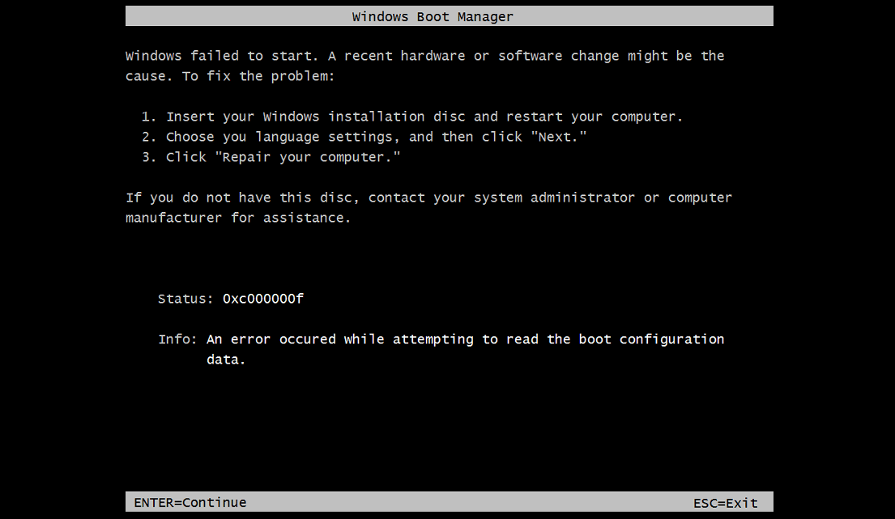

Unlisted

Alexenferman
Issue 1: Windows Boot Manager error 0xc000000f after Secure boot patch reboot

If you haven't already disabled UAC, disable it by running this registry file as administrator:
Open the Command prompt and type:
mountvol s: /s
Manually copy the SecureBootDebug.efi file from the SecureBootPatch folder to s:\efi\microsoft\boot\
Type:
mountvol s: /d
Run InstallPolicy.cmd again
Restart the tablet
Once you see the Secureboot screen, select the "Accept and install" option using the volume buttons and press on the Windows button to continue.
Issue 2: Test mode "An error has occurred while setting the element data" error
If you haven't already disabled UAC, disable it by running this registry file as administrator:
Open the Command prompt and type:
mountvol s: /s
Download the EFI.zip file

Disabling_UAC.reg
Delete all files in the S: partition except for the securebootdebugpolicy.p7b file (back up before deleting)
Unzip the EFI.zip, and paste it into the S: partition.
Type:
mountvol s: /d
Restart the tablet
If your Surface does not turn on anymore, follow these steps to fix it and come back here
Issue 3: Error 0xc0000225, 0xc000000f or Surface Logo after modifying the EFI
If your Surface shows error 0xc0000225 or 0xc000000f, shows the Surface Logo and turns off, or is showing other weird errors, follow the steps below:
Insert your USB drive in the tablet USB port.
Hold the Volume down button and press the power button once.
When the Surface logo and the spinning circles are displayed, release the volume down button.
Select "Troubleshooting", then select "Advanced Options" and "Command Prompt".
Type:
bootrec /rebuildbcd
You will have to repeat Part 3: Disabling Secureboot again
Issue 4: Error 0xc0000428 or 0xc000000f after first Windows 10 Boot
If your Surface shows error 0xc0000428 or 0xc000000f and says "A digital signature could not be verified", follow the steps below:
Insert your USB drive in the tablet USB port.
Hold the Volume down button and press the power button once.
When the Surface logo and the spinning circles are displayed, release the volume down button.
Select "Troubleshooting", then select "Reset this PC"
Select "Remove Everything" and select the target operating system (if required)
Select "Just remove my files"
It should reset, and restart to Windows 10.